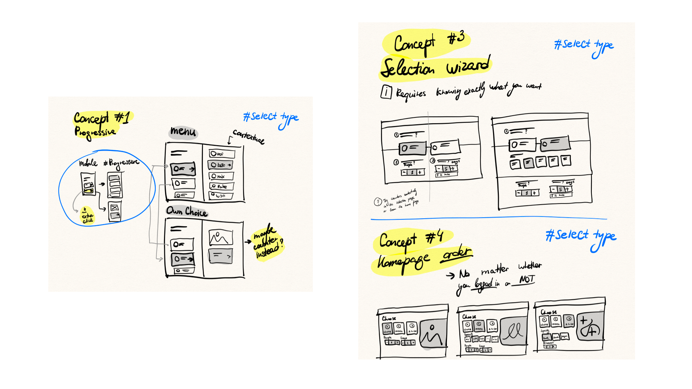
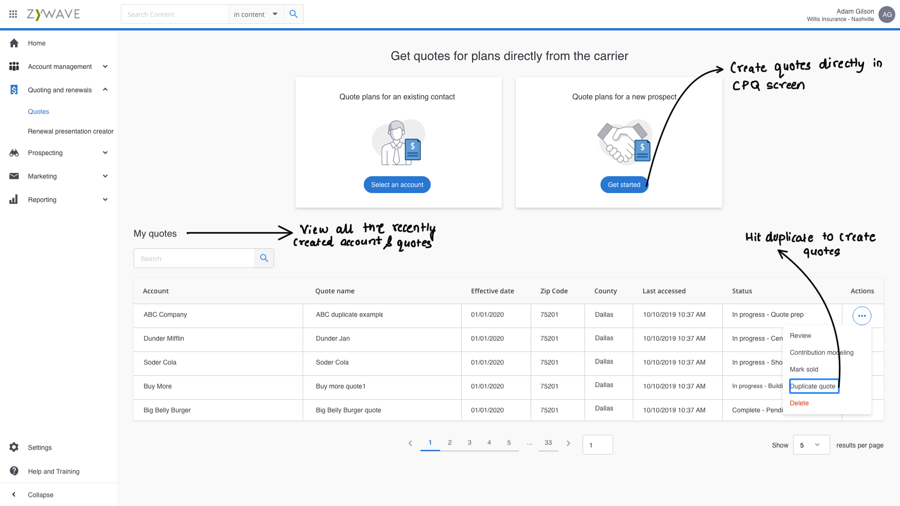

Project overview
The product
The platform had been in use for years, and it showed. Features had been added over time without a consistent design direction, workflows required too many steps, and users had learned to work around the system rather than with it. Brokers and ops staff were spending more time navigating the tool than working their cases.
The challenge
Errors were common, onboarding took weeks, and support tickets kept piling up about things that should have been obvious from the interface. Experienced users had built so many workarounds, spreadsheets, sticky notes, that the actual inefficiency had become invisible. The product needed a rethink, not a visual refresh.
Map where users actually got stuck and why · reduce the steps to complete a standard quote · make patterns learned in one area carry to another · cut onboarding time · give visibility into quote status and pending actions · reduce navigation-related support volume.
My role
I was the only designer on this product. In our team, each designer owned one project end to end, so I was responsible for every part of the design process, while weekly design critiques kept the quality honest and the thinking sharp.
I worked directly with the product owner from day one, attending roadmap sessions and translating business requirements into design briefs the team could act on. Research ran the same way: I ran the interviews and contextual inquiry sessions myself, and brought findings back to critique for interrogation. And before any design happened, I got the product owner and sales team to agree on the metrics we'd be judged on, so the later calls came down to evidence instead of whose opinion was loudest.
The problem
Years of feature additions with no consistent design language meant brokers spent more time navigating than quoting. Key details were buried in unexpected places, error states were confusing, and the interface punished new users hardest.
Information buried, clicks everywhere
Brokers hunted for basic quote information that should have been immediately visible. A standard quote took a minimum of 12 clicks.
Pricing errors at scale
Complex commission structures and unclear validation led to systematic mistakes, quietly eroding trust in every number the system produced.
No duplication, so spreadsheets
The system had no way to duplicate or version a quote, so brokers tracked variations in external spreadsheets instead.
A brutal learning curve
New brokers needed 2–3 weeks to get productive because the interface followed no predictable patterns, every screen its own little system.
Research first, with real users this time
Unlike pure stakeholder-constrained projects, here I had direct access to users, and used it. Spending real time with brokers before touching the UI prevented assumptions from driving decisions. Several things we thought were problems turned out not to be; the real blockers were hiding elsewhere.
The findings that set the agenda
of brokers used external spreadsheets to track quote variations, because the system had no duplication feature.
clicks minimum and 18 minutes on average to generate a single quote.
of quotes contained pricing errors, traced to unclear commission logic and weak validation.
for a new broker to reach productivity, the cost of an interface with no shared patterns.
A design system from absolute zero
Before any screen design started, the product had no design system at all: colors hardcoded, components built independently on each screen, no shared language between design and engineering. I built one from scratch, reusable components, semantic color, spacing and type scales, before redesigning a single workflow.
The investment paid for itself: consistency made patterns transferable for users, development moved faster against a shared vocabulary, and the system became the foundation engineering still builds new features on.

The solution
The redesign focused on reducing unnecessary complexity, making the most important information visible without clicking, and creating a consistent experience new users could pick up quickly, while keeping core workflows recognizable for the long-time users who'd built habits around them.
Quote duplication: the #1 request, finally
Brokers can duplicate any quote and create variations in seconds, killing the spreadsheet workaround used by 82% of them.
Key information surfaced, not buried
Quote status, pending actions, and pricing details visible at a glance, the data brokers hunted for now leads the layout.
Validation that explains itself
Clear commission logic and inline validation attack the 28% pricing-error rate at its source, instead of letting errors surface downstream.
Responsive, because deals happen everywhere
A fully responsive interface lets brokers review and modify quotes on tablets and mobile, not just at their desks.

Impact
"Finally! Quote duplication was our #1 request. Now I can create variations for clients in seconds instead of starting from scratch."
Learnings
Let research redirect you
Some of the most important findings came from things we weren't specifically looking for. Several assumed problems weren't problems at all.
Critique keeps quality honest
Bringing work-in-progress to the team weekly meant other designers caught what I was too close to see, and pushed the work further.
Define metrics before designing
Success criteria set up front kept the team focused on whether things were actually improving, not just whether the new design looked better.
Balance familiarity with improvement
Long-time users had habits. We kept core workflows recognizable while modernizing the patterns around them.
What I'd do differently
Involve engineering earlier. A few screens needed rework when technical constraints surfaced later than they should have. I adjusted the process mid-project to include engineering from the design phase.
Keep better decision logs. More thorough design documentation would have helped onboard future team members and made the reasoning behind choices easier to revisit.
Plan a phased rollout from the start. Launching everything at once was risky; a staged rollout would have let the team learn from real usage and iterate faster.